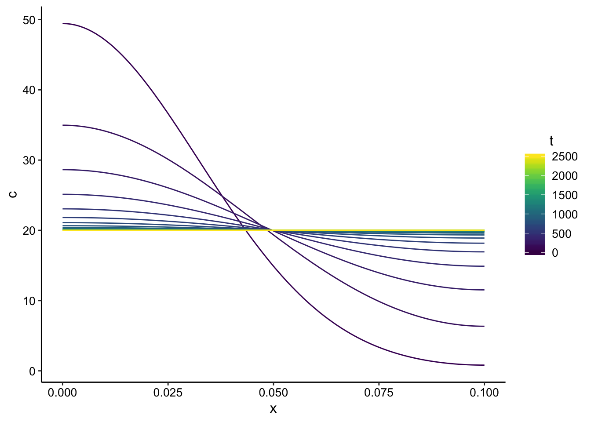
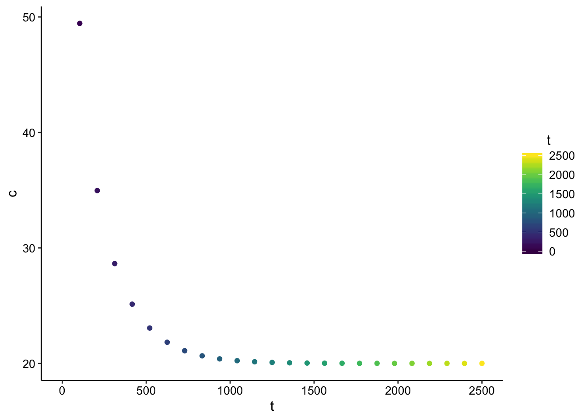
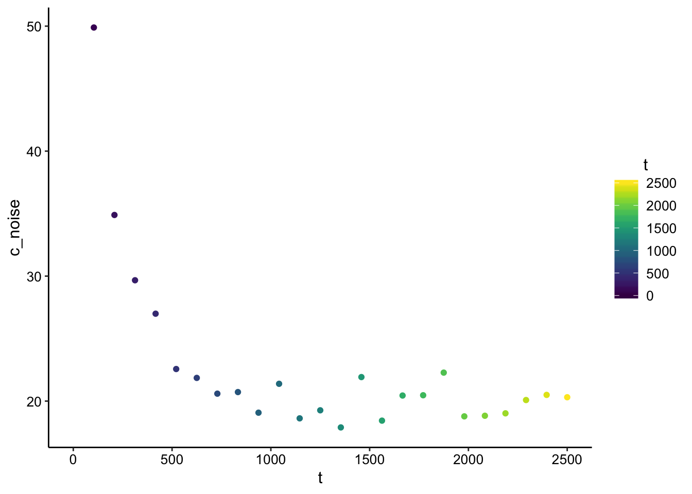
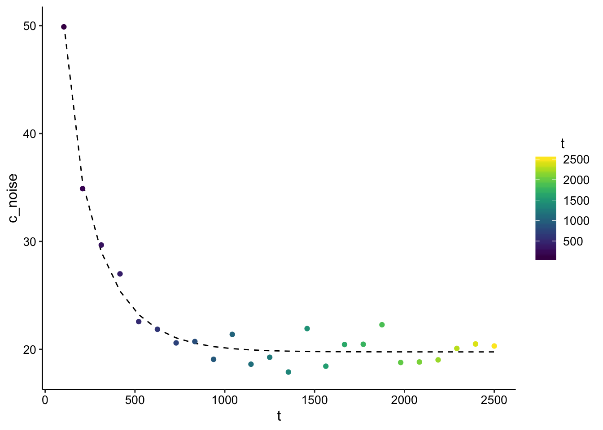

Finite point-source diffusion model
03_04_19
library(tidyverse)
library(cowplot)
library(broom)
library(modelr)
library(viridis)
library(lubridate)
library(hms)
library(knitr)
library(kableExtra)
library(patchwork)
library(VGAM)
library(nls.multstart)
knitr::opts_chunk$set(tidy.opts=list(width.cutoff=60),tidy=TRUE, echo = TRUE, message=FALSE, warning=FALSE, fig.align="center")
source("../tools/echem_processing_tools.R")
source("../tools/plotting_tools.R")
theme_set(theme_1())A new diffusion model
Based on the explanation from this Dartmouth link under “Initial punctual release between two boundaries” I got the following equation for diffusion between two barriers at \(x = 0\) and \(x = L\) for a point source at \(x = a\).
\[ C(x,t) = \frac{M}{\sqrt{4 \pi D t}} \sum_{n = -\infty}^{\infty} \left[ \exp{ \left( \frac{-(x-2nL-a)^2}{4 D t} \right) } + \exp{ \left( \frac{-(x-2nL+a)^2}{4 D t} \right) } \right] \]
For our system, we will assume that the point source is at \(a = 0\), so we can evaluate and simplify:
\[ C(x,t) = \frac{M}{\sqrt{4 \pi D t}} \sum_{n = -\infty}^{\infty} \left[ \exp{ \left( \frac{-(x-2nL)^2}{4 D t} \right) } + \exp{ \left( \frac{-(x-2nL)^2}{4 D t} \right) } \right] \]
\[ C(x,t) = \frac{M}{\sqrt{4 \pi D t}} \sum_{n = -\infty}^{\infty} \left[ 2 \exp{ \left( \frac{-(x-2nL)^2}{4 D t} \right) } \right] \]
This expression looks a little nasty, but it’s pretty straightforward to write as a function. The function below will take in the parameters \(M_0\), \(L\), \(D\), and calculate the concentration \(C\) for a range of \(x\) and \(t\) values.
finite_point_x_t <- function(m0, L, D, x, t) {
sum = 0
for (n in seq(-100, 100, 1)) {
sum = sum + 2 * exp((-(x - 2 * n * L)^2)/(4 * D * t))
}
(m0/sqrt(4 * pi * D * t)) * sum
}So this function will calculate the concentration gradient over time! Here I’m calculating the first 200 terms, which should be sufficient.
Generate some data
Now let’s generate some a grid of time \(t\) and space \(x\), and calculate the concentration gradient for some arbitrary parameters \(M_0 = 2\), \(L = 0.1\), and \(D = 5*10^{-5}\).
grid <- expand.grid(x = seq(0, 0.1, length = 101), t = seq(0,
2500, length = 25))
finite_point_data <- grid %>% mutate(c = finite_point_x_t(m0 = 2,
L = 0.1, D = 5e-06, x = x, t = t))Ok, let’s see what our concentration gradients look like!
ggplot(finite_point_data, aes(x = x, y = c, color = t)) + geom_path(aes(group = t)) +
scale_color_viridis()
Cool, so this shows that the concentration starts out high at \(x = 0\) and slowly equilibrates to an almost flat gradient (at longer times it will be totally flat).
Ok, for our electrode system, we really only have a measurement at \(x = 0\), so let’s see what the concentration does over time at that point in space.
ggplot(finite_point_data %>% filter(x == 0), aes(x = t, y = c,
color = t)) + geom_point() + scale_color_viridis() Great! This looks similar to our data. This is equivalent to evaluating the expression above at \(x = 0\), which gives:
\[ C(x,t) = \frac{M}{\sqrt{4 \pi D t}} \sum_{n = -\infty}^{\infty} \left[ 2 \exp{ \left( \frac{-(-2nL)^2}{4 D t} \right) } \right] \]
I’ll write a function to do just that math and regenerate our data for just \(x = 0\). Let’s add a little noise too, to make it more realistic and also allow us to do a nonlinear fit.
finite_point_x0 <- function(m0, L, D, t) {
sum = 0
for (n in seq(-100, 100, 1)) {
sum = sum + 2 * exp((-(-2 * n * L)^2)/(4 * D * t))
}
(m0/sqrt(4 * pi * D * t)) * sum
}
finite_point_x0_data <- grid %>% filter(x == 0) %>% mutate(c = finite_point_x0(m0 = 2,
L = 0.1, D = 5e-06, t = t)) %>% mutate(c_noise = rnorm(n = length((grid %>%
filter(x == 0))$t), mean = c, sd = 1))Fitting for parameters
So here’s what the concentration looks like at \(x = 0\) over time with a little noise added:
ggplot(finite_point_x0_data, aes(x = t, y = c_noise, color = t)) +
geom_point() + scale_color_viridis()
Ok, now let’s see if we can get the nonlinear least squares (nls) function to fit this data and give us back the parameters we used to generate the data.
suppressWarnings(fit_nls_multstart <- nls_multstart(formula = c_noise ~
finite_point_x0(m0 = 2, L, D, t = t), data = finite_point_x0_data,
start_lower = c(L = 0.01, D = 1e-08), start_upper = c(L = 10,
D = 1e-05), lower = c(L = 0, D = 0), supp_errors = "Y",
iter = 250, na.action = na.omit))
L_fit <- coef(fit_nls_multstart)[1]
D_fit <- coef(fit_nls_multstart)[2]
finite_point_x0_data_pred <- finite_point_x0_data %>% mutate(pred = finite_point_x0(m0 = 2,
L = L_fit, D = D_fit, t = t))
ggplot(finite_point_x0_data_pred %>% filter(t > 0), aes(x = t,
y = c_noise, color = t)) + geom_line(aes(y = pred), color = "black",
linetype = 2) + geom_point() + scale_color_viridis()
summary(fit_nls_multstart)##
## Formula: c_noise ~ finite_point_x0(m0 = 2, L, D, t = t)
##
## Parameters:
## Estimate Std. Error t value Pr(>|t|)
## L 1.012e-01 1.499e-03 67.50 <2e-16 ***
## D 4.859e-06 1.521e-07 31.94 <2e-16 ***
## ---
## Signif. codes: 0 '***' 0.001 '**' 0.01 '*' 0.05 '.' 0.1 ' ' 1
##
## Residual standard error: 1.167 on 22 degrees of freedom
##
## Number of iterations to convergence: 11
## Achieved convergence tolerance: 1.49e-08Wow, it actually works! Note that we asked the nls to find the values of D and L, but we provided \(M_0\). This is similar to the way I’m doing the analysis now, but it does depend on having an accurate guess for \(M_0\). Let’s see what estimate we get if \(M_0\) is off by 2x.
### m0 = 1 instead of m0 = 2
suppressWarnings(fit_nls_multstart <- nls_multstart(formula = c_noise ~
finite_point_x0(m0 = 1, L, D, t = t), data = finite_point_x0_data,
start_lower = c(L = 0.01, D = 1e-08), start_upper = c(L = 10,
D = 1e-05), lower = c(L = 0, D = 0), supp_errors = "Y",
iter = 250, na.action = na.omit))
L_fit <- coef(fit_nls_multstart)[1]
D_fit <- coef(fit_nls_multstart)[2]
finite_point_x0_data_pred <- finite_point_x0_data %>% mutate(pred = finite_point_x0(m0 = 1,
L = L_fit, D = D_fit, t = t))
ggplot(finite_point_x0_data_pred %>% filter(t > 0), aes(x = t,
y = c_noise, color = t)) + geom_line(aes(y = pred), color = "black",
linetype = 2) + geom_point() + scale_color_viridis()
summary(fit_nls_multstart)##
## Formula: c_noise ~ finite_point_x0(m0 = 1, L, D, t = t)
##
## Parameters:
## Estimate Std. Error t value Pr(>|t|)
## L 5.061e-02 7.497e-04 67.50 <2e-16 ***
## D 1.215e-06 3.803e-08 31.94 <2e-16 ***
## ---
## Signif. codes: 0 '***' 0.001 '**' 0.01 '*' 0.05 '.' 0.1 ' ' 1
##
## Residual standard error: 1.167 on 22 degrees of freedom
##
## Number of iterations to convergence: 9
## Achieved convergence tolerance: 1.49e-08So now the function still returns a nice looking best fit line, but the estimate of L is off 2x and the estimate of D is off almost 5x.
I think that we can continue to deal with this in the same way as before, by estimating D with a high and low estimate of \(I_0\) using the soak peak current and the first transfer SWV peak current.
Now, I need to re adapt this math to the SWV current, and try to fit some of our real data!